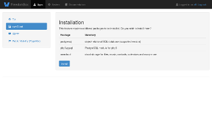
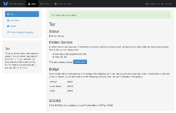

What's new in FreedomBox 0.3
Although Bdale Garbee's only on-stage appearance at linux.conf.au 2015 was as part of a panel Q-and-A session with Linus Torvalds, Rusty Russell, and Andrew Tridgell, he still managed to make news by announcing the release of FreedomBox version 0.3 during his remarks. For users, the new release adds support for another popular hardware platform, improves the integration of several software services with the Tor network, and sports a revamped user interface. Under the hood, there are additional changes to be found, including several security improvements and an update to the Debian base operating system.
FreedomBox, for those unfamiliar with it, is a personal-server distribution designed to run on small, low-power hardware devices (such as plug computers) and provide a free-software alternative to many of the cloud-based services offered by popular web companies like Google. By running on small devices, it is hoped that users will keep their FreedomBoxes in their homes rather than at a hosting facility; that offers the user additional privacy protections (and helps guard against seizure by the authorities) in many legal jurisdictions. The project was announced in 2010, but development has been on the slow side.
The previous release was version 0.2 in March 2014, which we looked at in May of that year. But FreedomBox's goals are ambitious: the project is designed to be an easy-to-use home server that can be configured and managed by the average non-programmer—since, the thinking goes, it is those members of the public without development experience who are most at risk to privacy violations. It is also true, of course, that non-developers make up the majority of the population: people with less technology experience are unlikely to set up and host their own email and web servers, even if they know it is a good idea.
Consequently, a lot of work goes into making FreedomBox simple to set up and simple to manage. That starts with hardware support: the initial target was plug computer devices like the DreamPlug. Subsequently, the easy-to-find (and easy-to-get-help-with) Raspberry Pi was added to the supported hardware list. Version 0.3 expands the list further, adding support for the BeagleBone Black. Images built for the BeagleBone Black, Raspberry Pi, and DreamPlug are available for download, as are 32-bit and 64-bit VirtualBox images.

FreedomBox is still based on Debian, but one important change in version 0.3 is that FreedomBox has switched over to using Debian unstable. The release announcement chalked this change up to a desire to ease development, although it also has the side effect of making newer versions of the various packages available. Another change worth pointing out is that previous releases allowed root logins with a well-known password. As of 0.3, root login has been disabled, and any customization on the user's part must be done through the sudo-capable user account "fbx."
But, as was the case in version 0.2, configuration of FreedomBox is meant to be performed through the Plinth web interface, not through a terminal session. Plinth underwent an overhaul in the recent development cycle; it is now a Django application running on Python 3 and making use of the Bootstrap framework. It is hard to say definitively whether or not the redesigned Plinth is faster to any meaningful degree, but it certainly does work well and, in my estimation, is less buggy than the web interfaces found in DD-WRT or OpenWrt (both of which have been known to hang from time to time).
Perhaps the best feature of Plinth in the new release is that it provides a straightforward way to check on the status of the various services running on the FreedomBox and to painlessly install new ones. Out of the box, for instance, the 0.3 release does not have ownCloud set up, but one click in Plinth will download and install all of the package dependencies and initialize ownCloud. The release announcement pointed out one known issue: users must manually remove (or rename) the /etc/owncloud/config.php file after installing ownCloud, but the remaining setup can be managed through Plinth. There are still several other applications that interested users must install from the command line (such as ikiwiki), but ownCloud is a large application, so making it painless to install is quite an achievement.
ownCloud is one of the supported applications—and is perhaps the most important one for many users, since it offers such a diverse feature set (file storage, collaborative editing, calendar and address book synchronization, etc.). Chief among the other services, though, is Tor support. Out of the box, FreedomBox configures and starts a Tor bridge (i.e., an unlisted relay node). The bridge supports obfsproxy, with the obfs3 and ScrambleSuit transport plugins. This disguises Tor traffic to make it harder for intermediaries to detect (and block) Tor.

Tor support has also been enhanced on the other end of FreedomBox connections. Many people use a Dynamic DNS service to connect to their FreedomBox from the Internet at large, but there is an inherent risk in doing so: the connections can be logged by any Internet Service Provider or backbone provider along the route, which discloses the existence of the FreedomBox and could lead to it being blocked. In FreedomBox 0.3, there is another option: the server can be configured to run as a Tor hidden service. One click in the Plinth UI is all that is required, after which the server can be accessed from any machine running Tor via a protected .onion hostname. Both ownCloud and the ejabberd XMPP chat service have been tested to work with this new feature.
There are several other minor updates to be found in the new release, such as automatically launching the FirewallD firewall to block risky services and ports. But for the most part, 0.3 is an incremental update: more polish, more work on fundamental privacy and security issues. It is tricky to gauge FreedomBox's chances of becoming a runaway hit with the non-technical masses, though it is probably safe to say there are still some pieces missing (such as email and social networking). As it stands today, though, version 0.3 offers enough functionality that potential users who have been monitoring the project waiting for a stable release may wish to consider deploying it in their home.
Yes, that will be an easier task for those who are already well-versed in
using Tor, configuring ownCloud, and installing packages with
apt-get. But the progress since 0.2 is clear; rebasing on
Debian unstable ensures that packages like ownCloud and Bootstrap will
be up-to-date, Plinth is easier to work with, and the privacy features
are compelling. And the more people from the community to put it to the
test, the better FreedomBox will get.
| Index entries for this article | |
|---|---|
| Security | Distributions |
| Security | Home network |
| Security | Internet |